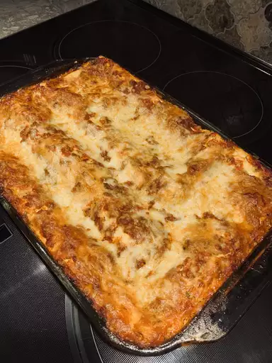

World's Best Lasagna!

This lasagna recipe created by John Chandler takes a little work, but it is so satisfying!
Ingredients
- Meat:This super meaty lasagna has sweet italian sausage and lean ground beef.
- Onion and Garlic:An onion and two cloves of garlic are cooked with the meat to add tons of flavor
- Tomato productsYou'll need a can of crushed tomatoes, two cans of tomato sauce, and two cans of tomato paste.
- Sugar:Two tablespoons of white sugar add subtle sweetness and enhance the flavor of the sauce.
- Spices and seasoningsThis lasagna recipe is flavored with fresh parsley, dried basil leaves, salt, Italian seasoning, fennel seeds, and black pepper.
- Lasagna noodles:Use store-bought or homemade lasagna noodles.
- Cheeses:Parmesan, mozzarella, and ricotta cheese make this lasagna extra decadent.
- Egg:An egg helps bind the ricotta so it doesn't ooze out of the lasagna when you cut into it.
Steps